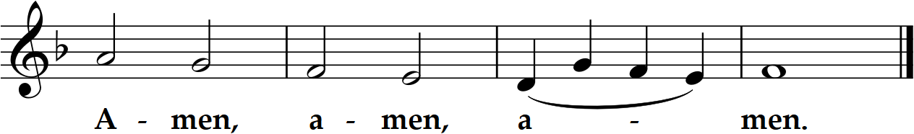

The Commemoration of All the Faithful Departed (All Souls)
7 pm Mass
The Commemoration of All the Faithful Departed (All Souls)
7 pm Mass
Prelude “Vesper Voluntary II (D minor)” Edward Elgar (1857-1934)


The souls of the just are in the hand of God,
and no torment shall touch them.
They seemed, in the view of the foolish, to be dead;
and their passing away was thought an affliction
and their going forth from us, utter destruction.
But they are in peace.
For if before men, indeed, they be punished,
yet is their hope full of immortality;
chastised a little, they shall be greatly blessed,
because God tried them
and found them worthy of himself.
As gold in the furnace, he proved them,
and as sacrificial offerings he took them to himself.
In the time of their visitation they shall shine,
and shall dart about as sparks through stubble;
they shall judge nations and rule over peoples,
and the Lord shall be their King forever.
Those who trust in him shall understand truth,
and the faithful shall abide with him in love:
because grace and mercy are with his holy ones,
and his care is with his elect.
Brothers and sisters: Hope does not disappoint, because the love of God has been poured out into our hearts through the Holy Spirit who has been given to us. For Christ, while we were still helpless, died at the appointed time for the ungodly. Indeed, only with difficulty does one die for a just person, though perhaps for a good person one might even find courage to die. But God proves his love for us in that while we were still sinners Christ died for us. How much more then, since we are now justified by his Blood, will we be saved through him from the wrath. Indeed, if, while we were enemies, we were reconciled to God through the death of his Son, how much more, once reconciled, will we be saved by his life. Not only that, but we also boast of God through our Lord Jesus Christ, through whom we have now received reconciliation.
Jesus said to the crowds: “Everything that the Father gives me will come to me, and I will not reject anyone who comes to me, because I came down from heaven not to do my own will but the will of the one who sent me. And this is the will of the one who sent me, that I should not lose anything of what he gave me, but that I should raise it on the last day. For this is the will of my Father, that everyone who sees the Son and believes in him may have eternal life, and I shall raise him on the last day.”
Homily + Profession of Faith
I believe in one God, the Father almighty,
maker of heaven and earth,
of all things visible and invisible.
I believe in one Lord Jesus Christ,
the Only Begotten Son of God,
born of the Father before all ages.
God from God, Light from Light, true God from true God,
begotten, not made, consubstantial with the Father;
through him all things were made.
For us men and for our salvation he came down from heaven,
and by the Holy Spirit was incarnate of the Virgin Mary,
and became man.
For our sake he was crucified under Pontius Pilate,
he suffered death and was buried,
and rose again on the third day
in accordance with the Scriptures.
He ascended into heaven
and is seated at the right hand of the Father.
He will come again in glory to judge the living and the dead
and his kingdom will have no end.
I believe in the Holy Spirit, the Lord, the giver of life,
who proceeds from the Father and the Son,
who with the Father and the Son is adored and glorified,
who has spoken through the prophets.
I believe in one, holy, catholic and apostolic Church.
I confess one Baptism for the forgiveness of sins
and I look forward to the resurrection of the dead
and the life of the world to come. Amen.
Prayer of the Faithful + Offertory
Domine Jesus Christe, Rex gloriae ("Lord Jesus Christ, King of Glory")
+ Liturgy of the Eucharist +
May the Lord accept the sacrifice at your hands,
for the praise and glory of his name, for our good, and the good of all his holy Church.

+ Our Father +
Our Father, who art in heaven, hallowed be thy name; thy kingdom come, thy will be done on earth as it is in heaven.
Give us this day our daily bread, and forgive us our trespasses, as we forgive those who trespass against us;
and lead us not into temptation, but deliver us from evil.
Deliver us Lord from every evil, graciously grant peace in our day, that by the help of your mercy we may be always free from sin
and safe from all distress, as we await the blessed hope, and the coming of our Savior, Jesus Christ.
For the kingdom, the power and the glory are yours now and for ever.
+ Sharing of Peace +
Lord, I am not worthy that you should enter under my roof, but only say the word and my soul shall be healed.

Queen, mother of mercy: our life, sweetness, and hope, hail. To thee do we cry, poor banished children of Eve.
To you we sigh, mourning and weeping in this va ley of tears.
Turn then, our advocate, those merciful eyes toward us. And Jesus, the blessed fruit of thy womb, after our exile, show us.
O clement, O loving, O sweet Virgin Mary
"St. Michael the Archangel, defend us in battle. Be our protection against the wickedness and snares of the devil.
May God rebuke him, we humbly pray; and do thou, O Prince of the heavenly hosts, by the power of God,
cast into hell Satan and all the evil spirits who prowl about the world seeking the ruin of souls. Amen."

Postlude “Vesper Voluntary VIII (D major)” Edward Elgar (1857-1934)